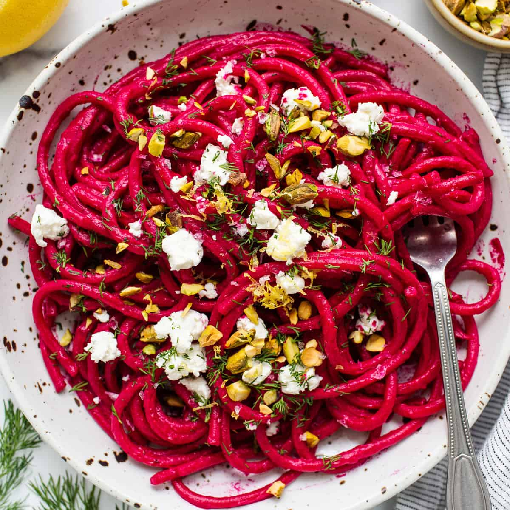

Beet Pasta

Description
This wonderful dish utilizes beets to provide a unique taste and bright presentation
to wow your friends and family. We are positive this will be added to your weekly dinner rotation!
Ingredients
- 12 oz beets, peeled and cut into 1-inch pieces
- 1 sweet onion, roughly chopped
- 4 garlic cloves, peeled
- 2 Tablespoons olive oil
- 1 teaspoon chopped fresh thyme
- 0.5 teaspoons kosher salt
- 0.25 teaspoons black pepper
- 16 oz package fettuccine or other pasta like bucatini, linguine, rigatoni, or farfalle
- 0.5 cups shredded parmesan cheese
- 0.5 teaspoons red pepper flakes
- 4 oz plain goat cheese or whipped feta
- 0.5 to 0.75 cups roasted and salted pistachios, pine nuts, or walnuts, roughly chopped
- 2 Tablespoons torn fresh basil, for garnish
Steps
- Preheat the oven to 425F. Line a baking dish with
parchment paper.
Toss together beets, onion, garlic, oil, thyme,
salt, and pepper.
Cover with foil.
Roast for 40 to 45 minutes until beets are tender.
- While beets are roasting, cook pasta in salted water
according to package directions until al dente.
Reserve 1 cup pasta water before draining and set aside. Drain
pasta and return to the pot.
- When beets are fork tender, transfer the roasted
vegetables into a blender or food processer along
with half of the reserved pasta water. Pulse until the
vegetables start to break down, then increase the
speed and puree until smooth.
- Combine the beet pasta sauce with the cooked pasta
and toss well to coat. Stir in parmesan cheese
and red bell pepper flakes. Add more of the reserved
pasta water as needed until the pasta is evenly
coated and the sauce is silky, not gummy or thick.
- Divide the pasta between pasta bowls or plates
and dot with chunks of goat cheese. Garnish with a
generous amount of chopped pistachios and torn basil leaves.
Sprinkle with additional red pepper flakes, to taste.